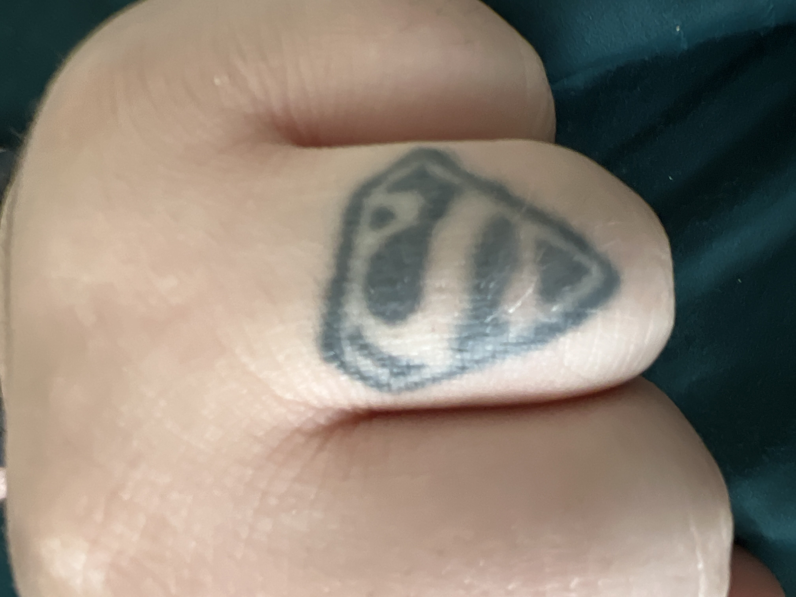
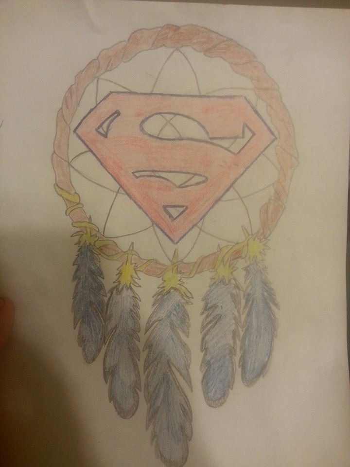
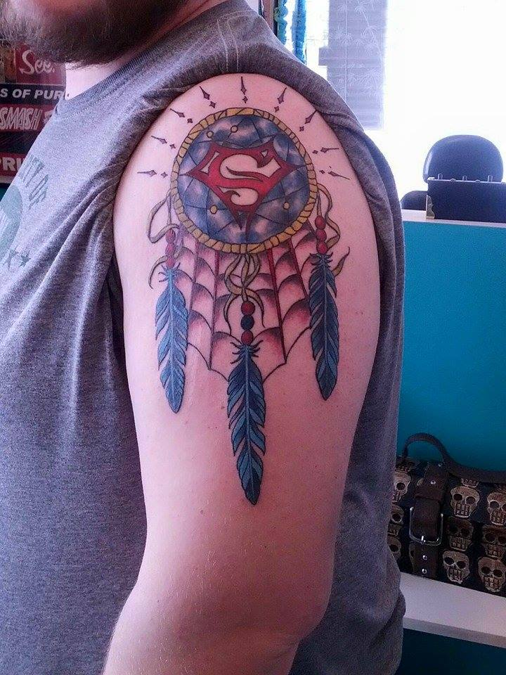
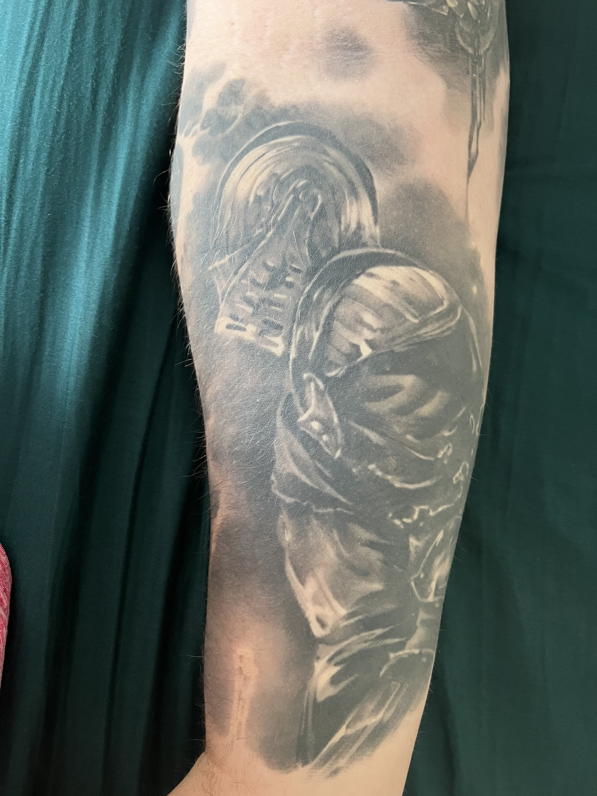
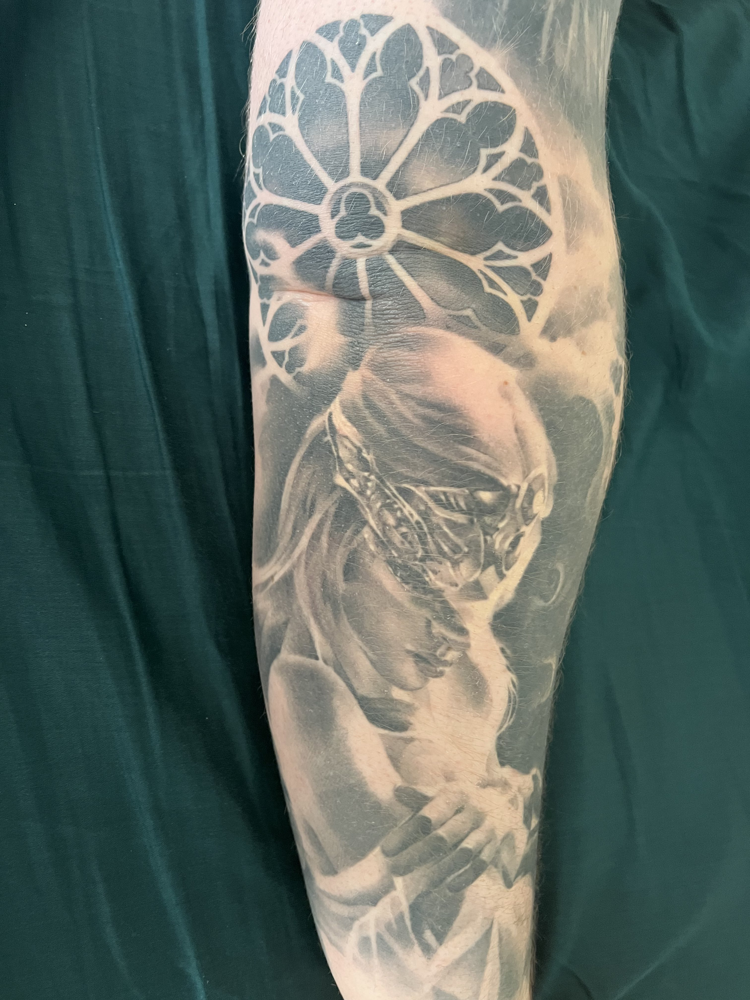
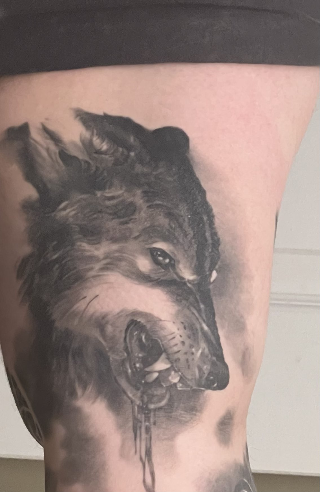
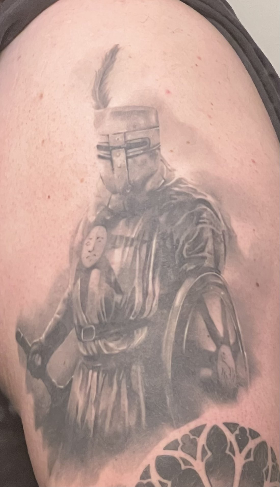

Everyone Remembers Their First Time

I think the first tattoo you get is always a special one.
You learn if you love it or hate, if its your first or your last.
For me an instant love was born, not just for my own tattoos but for others and
the actual art behind them too. Wanted to go in nice and easy for my first one so
one day while just driving around my wife and I decided to just go get little finger
tattoos on our ring fingers. We both liked Superman so we decided on little Superman symbols.
Positives were it was quick and small for a first one, negatives were it hurt a lot more than
I thought it would. Especially for such a small area and design.
Go Big Or Go Home


My second tattoo I decided, " First one went great, time to get something much bigger "
This one was also a little special to me as it was based off of design I actually drew on my own.
My tattoo artist at that time was great to work with as well in regards to it, as he was willing
to take my design and make it work as a tattoo. This was also the first tattoo that became a "conversation starter".
People would ask about it, want to see it, and helped make me a little bit more social and helped
ease some anxiety I had about starting conversations with people. It was also this tattoo where I
learned about multi visit work. As I had two different appointments to finish it, one to do the
outline and then one more to go in and color it.
Just Can't Sleeve It Alone




This brings us to the biggest project to date, and my favorite so far. This idea came
to me based off one of my favorite video game series, and one that helped me work through
some issues when it came out. For this tattoo I also found a
new artist, who ive meshed really well with. It is still ongoing, with one to two sessions left. Currently
though it is made up of a few elements that were all important to the game itself or parts
that I personally liked a lot. This being one cohesive, planned piece is a big reason why this
is my most liked tattoo. I also learned a lot of patience doing this as ive had multiple, long,
sometimes painful sessions. Just like the previous ones I have gotte, this also just hammered home
that I want to get more and that I really enjoy everything behind tattoos. During these I was
also introduced to the pain of white highlights, which is a new brand of pain I hadn't experienced
before. That is the process of going over areas at the end of a tattoo session with white ink
for small highlights in areas.
Where To Go From Here?
I still need to finish the tattoos in progress. But I do have some idea going forward for more
that I want. The two biggest things to figure out being, where to get my next tattoo, and which
idea I want to do first. The leading idea right now is a space themed piece or sleeve, as space
is probably one of the things im most interested in. The next piece after that is probably some
kind of memorial piece for my dad who passed, but I have no clue what I want to get for that so
it'll probably be awhile before I get that done. Location wise, my other arm is the top spot currently.
The only downside to that is that it does have one tattoo there already. So my backup spot is
one of my legs, as its a big area and there isnt any other pieces there already. I can say for
certain though, I see a lot more tattoos getting done in my future.